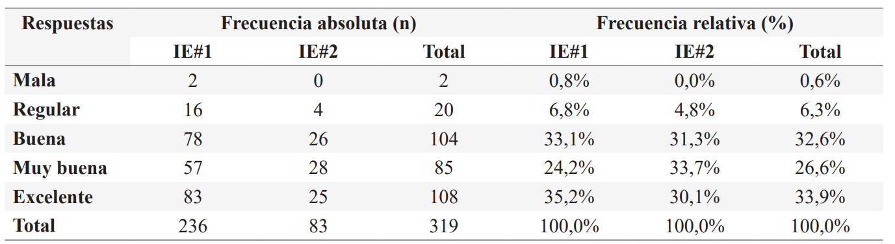
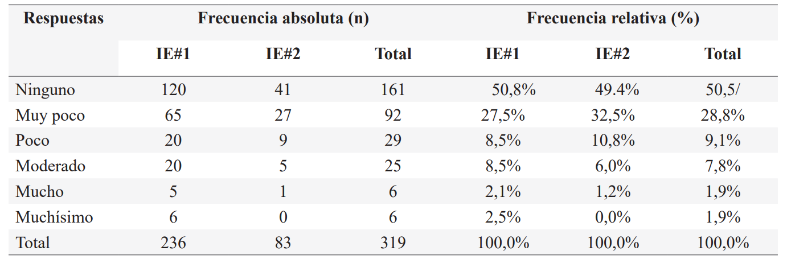
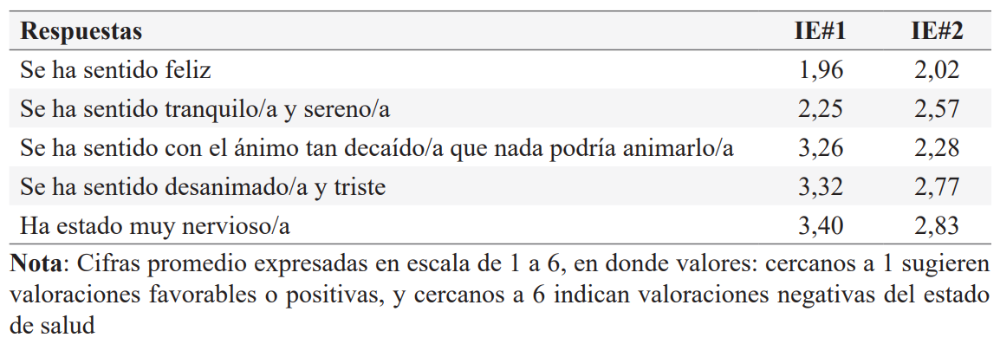
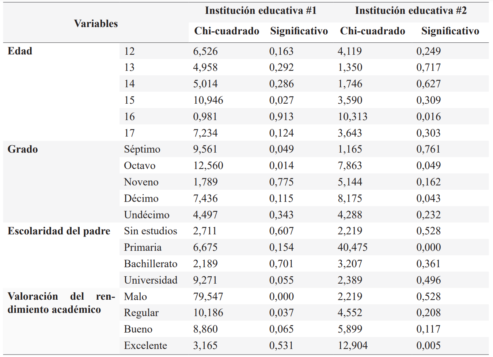

ISSN-PRINT 1794-9831 / E-ISSN 2322-7028
Vol. 19 Nº 3 / sep - dic, 2022 / Cúcuta, Colombia.
ISSN-PRINT 1794-9831 / E-ISSN 2322-7028
Vol. 19 Nº 3 / sep - dic, 2022 / Cúcuta, Colombia.
Resumen
Introducción: La adolescencia es una etapa esencial dentro del ciclo de vida humano. La presencia de enfermedades en esta etapa puede afectar la capacidad para crecer y desarrollarse a plenitud, sobre todo cuando son de índole física, psicológica y ocurren en contextos escolares. Objetivo: Evaluar la autopercepción de salud que tienen los estudiantes adolescentes matriculados en instituciones educativas en tiempos de pandemia por Covid-19. Cartagena 2021. Materiales y métodos: Estudio cuantitativo, de corte transversal, y correlacional. Población de 1188 estudiantes de 12-17 años de dos instituciones educativas en Cartagena (Colombia). Muestra estimada de 319 sujetos, seleccionados a través de muestreo aleatorio simple. Se aplicó encuesta sociodemográfica diseñada por el equipo investigador y validada por expertos y para el estado de salud percibido se usó el Cuestionario de Salud SF-36, la versión en español adaptada culturalmente al contexto colombiano por Lugo, García y Gómez la cual cuenta con alfas de Cronbach entre 0,7 y 0,94. Resultados: Los adolescentes fueron principalmente de 15 años (21,9%), de octavo (21,7%) y noveno (27,7%), se dedican a estudiar (95,9%), en sus familias se devengan menos del salario mínimo (42,3%) y entre 1-2 (40,8%). Viven con padre y madre, con o sin hermanos (72,7%), los padres están casados o en unión libre (60,5%) y han estudiado hasta bachillerato tanto madres (54,9%) como padres (49,2%). La autopercepción de la salud fue buena (32,6%) y excelente (33,9%). Se observaron correlaciones estadísticamente significativas (p < 0,05) entre dicha autopercepción y edad, grado, escolaridad del padre y valoración del rendimiento académico. Conclusión: Pese a la emergencia sanitaria ocasionada por la pandemia de covid-19, la autopercepción de salud que tienen un grupo de estudiantes adolescentes resulta ser favorable y positiva.
Palabras Claves: Covid-19; Autoinforme; Datos de salud generados por el paciente; Salud del adolescente.
Abstract
Introduction: Adolescence is an essential stage within the human life cycle. The presence of diseases at this stage can affect the ability to grow and develop to the fullest, especially when they are physical, psychological and occur in school contexts. Objective: To evaluate the self-perception of health of adolescent students enrolled in educational institutions in times of the Covid-19 pandemic. Cartagena 2021. Materials and methods: Quantitative, cross-sectional, correlational study. Population of 1188 students aged 12-17 years from two educational institutions in Cartagena (Colombia). Estimated sample of 319 subjects, selected through simple random sampling. A sociodemographic survey designed by the research team and validated by experts was applied and for perceived health status the SF-36 Health Questionnaire was used, the Spanish version culturally adapted to the Colombian context by Lugo, García and Gómez, which has Cronbach's alphas between 0.7 and 0.94. Results: The adolescents were mainly 15 years old (21.9%), in eighth grade (21.7%) and ninth grade (27.7%), they are dedicated to study (95.9%), in their families they earn less than the minimum wage (42.3%) and between 1-2 (40.8%). They live with father and mother, with or without siblings (72.7%), the parents are married or in union (60.5%) and both mothers (54.9%) and fathers (49.2%) have studied up to high school. Self-perception of health was good (32.6%) and excellent (33.9%). Statistically significant correlations (p < 0.05) were observed between self-perception and age, grade, father's schooling and assessment of academic performance. Conclusion: Despite the health emergency caused by the covid-19 pandemic, the self-perception of health of a group of adolescent students was favorable and positive.
KeyWords: Covid-19; Self-report; Patient-generated health data; Adolescent health.
Resumo
Introdução: A adolescência é uma etapa essencial no ciclo de vida humana. A presença de doenças nesta fase pode afetar a capacidade de crescimento e desenvolvimento pleno, especialmente quando elas são físicas, psicológicas e ocorrem em contextos escolares. Objetivo: Avaliar a autopercepção da saúde entre os estudantes adolescentes matriculados em instituições educacionais em tempos da pandemia de Covid-19. Cartagena 2021. Materiais e métodos: Estudo quantitativo, transversal, correlacional. População de 1188 estudantes de 12-17 anos de duas instituições educacionais em Cartagena (Colômbia). Amostra estimada de 319 sujeitos, selecionados através de amostragem aleatória simples. Foi aplicada uma pesquisa sociodemográfica projetada pela equipe de pesquisa e validada por especialistas e para a percepção do estado de saúde foi utilizado o questionário de saúde SF-36, a versão espanhola culturalmente adaptada ao contexto colombiano por Lugo, García e Gómez que tem a alfabetização de Cronbach entre 0,7 e 0,94. Resultados: Os adolescentes tinham principalmente 15 anos (21,9%), na oitava série (21,7%) e na nona série (27,7%), dedicam-se aos estudos (95,9%), em suas famílias ganham menos do que o salário mínimo (42,3%) e entre 1-2 (40,8%). Eles vivem com ambos os pais, com ou sem irmãos (72,7%), os pais são casados ou em união (60,5%) e ambas as mães (54,9%) e os pais (49,2%) estudaram até o ensino médio. A auto-percepção da saúde foi boa (32,6%) e excelente (33,9%). Foram observadas correlações estatisticamente significativas (p < 0,05) entre autopercepção e idade, série, escolaridade do pai e avaliação do desempenho acadêmico. Conclusão: Apesar da emergência sanitária causada pela pandemia de covid-19, a autopercepção da saúde de um grupo de estudantes adolescentes é favorável e positiva.
Palavras-chave: covid-19; Auto-relato; Dados de saúde gerados pelo paciente; Saúde do adolescente.
Autor de correspondencia*
1* Enfermera,
Magister en educación,
docente investigadora, Corporación
Universitaria Rafal Núñez, Cartagena
de Indias, Colombia.
moraima.deltoro@curnvirtual.edu.co,
Enfermera,
Magister en educación,
docente investigadora, Corporación
Universitaria Rafal Núñez, Cartagena
de Indias, Colombia.
moraima.deltoro@curnvirtual.edu.co,  0000-0001-6710-5171
0000-0001-6710-5171
2* Enfermera,
Magister en Auditoria
y Sistemas de Calidad en Servicios
de Salud, docente investigadora, lider
grupo de investigación GISIBEC Corporación Universitaria Rafal Núñez,
Cartagena de Indias, Colombia.
kendy.madero@curnvirtual.edu.co, 0000-0001-5581-784
Recibido: 5 julio 2022
Aprobado: 17 noviembre 2022
Para citar este artículo / To reference this article / Para citar este artigo: Del Toro-Rubio M, Madero-Zambrano K. Autopercepción de salud de adolescentes escolarizados en tiempos de pandemia por COVID-19. 2023; 20(1):59- 70. https://doi.org/10.22463/17949831.3475
© Universidad Francisco de Paula Santander.
Este es un artículo bajo la licencia CC-BY-NC-ND

Introducción
En la actualidad, la salud de la población adolescente constituye una prioridad en la agenda de política pública global en salud y en el campo de la investigación.
Esto porque la transición de la adolescencia a la adultez temprana es un período de múltiples cambios que involucra elementos importantes para la salud física y mental; aspectos que suelen incidir en el desarrollo y bienestar de un individuo (1). La Organización Mundial de la Salud expresa que, si bien la mayoría de los adolescentes presenta buena salud, la mortalidad prematura, la morbilidad y las lesiones en este grupo poblacional continúan siendo problemáticas importantes de analizar (2). Por ejemplo, los extremos de la malnutrición y obesidad, mancomunado al aumento de la falta de actividad física son algunos de los factores determinantes frente a enfermedades y muertes a temprana edad. De igual forma, problemáticas como depresión, violencia, VIH/Sida, embarazo y parto precoz, consumo de tabaco, alcohol y drogas, juega un papel fundamental en el bienestar y salud de los adolescentes (3).
En los últimos 20 años, Colombia ha documentado cambios notables en la salud de los adolescentes, evidenciando que las principales causas de morbilidad de esta población (12 - 18 años) se encuentran asociadas a las enfermedades no transmisibles (57,57%) y las condiciones transmisibles y nutricionales (16,26%). En menor medida aparecen las lesiones (5,48%) y las condiciones maternas (1,75%). Este panorama puede estar relacionado con una alimentación inadecuada, caracterizada por consumo poco frecuente de frutas, verduras 86,9%, lácteos 76,5% y consumo de sal adicional 43,3%. (4). Lo descrito es relevante, dado que las enfermedades pueden afectar la capacidad de los adolescentes para crecer y desarrollarse a plenitud. Además, se ha documentado que el consumo de alcohol o tabaco, el sedentarismo, las relaciones sexuales sin protección y la exposición a la violencia pueden poner en peligro su salud actual, así como la que presenten más adelante en el ciclo de vida (5). En efecto, cuando se consumen psicoactivos de modo excesivo a los 15 años, el riesgo de futuras adicciones se torna considerablemente alto (6).
La actual pandemia por Covid-19, ha generado grandes cambios a nivel social y personal, en los jóvenes quizás uno de los más significativos se enmarcó en la formación educativa, donde se generó una transición de educación presencial a remota; con este escenario emergieron algunas dificultades que afectaron el proceso de aprendizaje de los estudiantes y por ende su bienestar (7), lo que les generó síntomas depresivos, ansiedad, ideación suicida, problemas de sueño (8), y estrés a causa de no poder desarrollar sus actividades académicas por dificultades en la conexión a internet (9). Sumado a lo anterior, en la adolescencia ocurre una incidencia significativamente alta de trastornos socioemocionales, lo que puede estar ligado a los cambios propios del desarrollo en esta etapa. Es decir, esto puede tener vínculo con las transformaciones hormonales y morfológicas relacionados con la pubertad; las alteraciones en los patrones de sueño; las dificultades con la regulación de las emociones; los cambios en la importancia y naturaleza de las relaciones con los pares; y las eventuales alteraciones del autoconcepto (10). Adicionalmente existen otros condicionantes del estado de salud en estos sujetos, así como de las percepciones, concepciones y valoraciones que sobre ello emanan; aquí se incluyen entre otros– la manera en que se configura y opera la dinámica familiar, la cultura y el medio ambiente (11).
La autopercepción en salud es un indicador de bienestar subjetivo que puede ser un elemento clave como predictor en el proceso salud-enfermedad, en tanto que ofrece información relevante en salud tanto física como mental. Cabe resaltar, que este concepto se encuentra relacionado a distintas características sociodemográficas que influyen en la percepción de salud de un individuo, tal es el caso del sexo, la escolaridad y el lugar de residencia (12). Autores como Rosa y García (13), evidencian como la percepción de salud positiva de su población sujeto de estudio puede tener una relación directa con la mayor participación de actividades físico-deportivas. Por ende, identificar las relaciones existentes entre la salud autoevaluada y las características vitales de un individuo desde edades tempranas permite fortalecer políticas públicas, estrategias e intenciones en pro del cuidado y el mantenimiento de la salud en la adultez (14).
Ahora bien, existe información para diferentes contextos geográficos que aborda desde diversas perspectivas y matices analíticos la temática de la percepción de la salud entre los adolescentes. Para un grupo de 19 Ciudades europeas se conoció que los adolescentes que practican actividad física son más propensos a reportar un buen estado de salud (OR = 1,861, p valor = 0,001) (11). En un sentido similar apuntaron los hallazgos de una revisión sistemática, según los cuales existe evidencia de una asociación positiva entre la actividad física y el estado de salud autoinformado en adolescentes, de modo que el aumento de los niveles de actividad física da como resultado un mejor estado de salud autoinformado (15).
En Brasil se analizó la prevalencia de la autopercepción negativa de la salud, la cual ascendió a 26,7%. Siendo mayor en las mujeres (32,9%) respecto a los varones (19,1%), lo cual se explicaría por el hecho de que las féminas son más sensibles a detectar cambios fisiológicos y consideran hábitos inapropiados para la salud, y porque están más atentas a la atención médica. Además, se puntualizó que los sujetos cuyas familias devengan bajos ingresos tienen más probabilidades de calificar negativamente su salud. Esto obedece a que el ingreso se asume como un componente determinante para un mayor acceso a otras formas de actividades, entre ellas ocio, educación, vivienda y servicios de salud, así, el poder de adquisición de esos bienes y servicios actúa como mediador en la percepción de la salud (16).
Entre otro conjunto de estudiantes adolescentes brasileros se buscó conocer la asociación entre la salud autopercibida con la actividad física y el estado nutricional. Los hallazgos revelados dan cuenta de que existe una alta prevalencia de autopercepción de salud negativa, particularmente entre las mujeres, además de que los adolescentes rurales, cuyas madres tenían un nivel de escolaridad más bajo y que no practican actividad física en su tiempo libre, eran insuficientemente activos, tenían sobrepeso y preferían actividades de ocio más pasivas, contaban con una autopercepción de salud negativa más alta. Además, los adolescentes de ambos sexos que no practicaban actividad física durante su tiempo libre tenían más probabilidades de tener una percepción de salud negativa (17).
En el contexto Colombiano, un grupo de adolescentes de Bogotá tuvo una buena autopercepción de salud. Sin embargo, desde la salud mental, se evidenciaron problemáticas comunes en el grupo de mujeres adolescentes relacionadas con: “dolor/malestar” y “sentirse triste/preocupado o infeliz” (18). A nivel de Cartagena la información sobre el tema resultó ser ciertamente escasa.
Objetivos
Objetivo General
Evaluar la autopercepción de salud que tienen los estudiantes adolescentes matriculados en instituciones educativas en Cartagena durante 2021.
Objetivos específicos
Materiales y Métodos
El estudio fue cuantitativo (19), descriptivo (20), de corte transversal (21) y correlacional ( ). La población fue de 1.188 estudiantes entre 12 y 17 años, adolescentes matriculados en dos instituciones de educación media en la ciudad de Cartagena. Se estimó una muestra probabilística de 319 sujetos (error: 5%, nivel de confianza: 95%), y se consideraron los siguientes criterios de inclusión: sujeto adolescente, es decir, con 12-17 años; matriculado en alguna de las instituciones de educación media seleccionadas; cuyos padres o acudientes firmen el asentimiento informado, autorizando la respectiva participación.
La recolección de la información se realizó durante los meses de septiembre a noviembre de 2020, contó con la colaboración de las instituciones educativas para el envío por correo electrónico de un enlace que condujo a la encuesta, la cual estuvo alojada en un formulario en la plataforma Google Forms. Al acceder a la encuesta, apareció la explicación de la finalidad del estudio, el asentimiento informado (para los estudiantes, por tener de 12 a 17 años) y el consentimiento informado (para los padres). En caso de contar con la voluntad de participar, se daba acceso a las preguntas; en caso contrario se cerró el aplicativo y se agradeció.
El instrumento aplicado consta de 29 preguntas distribuidas en dos componentes: Aspectos sociodemográficos; diseñado por el equipo investigador que constó de 11 (ítems), teniendo en cuenta variables como edad, estado civil, grado, ingresos, tipo de familia, estado civil de los padres, escolaridad de los padres, cantidad de hermanos, entre otras. Este fue sometido a prueba piloto, en la cual no se realizaron modificaciones. Además, se contó con el Componente estado de salud percibido del cuestionario SF-36, que evaluó 7 dimensiones de salud: Autopercepción de salud física y psicológica, Funcionamiento físico, Dolor, Funcionamiento social, salud mental, rol emocional y vitalidad, contó con 36 ítems. Para este componente se recurrió al Cuestionario de Salud SF-36 (Alfa de Cronbach de 0,7 y 0,94), que corresponde a una escala genérica que proporciona un perfil del estado de salud y es aplicable a pacientes y a la población general; se usó la versión en español adaptada culturalmente al contexto Colombiano por Lugo, García y Gómez (23), la cual presenta equivalencia lingüística entre los ítems traducidos y los originales. Las dimensiones que integran el cuestionario original son: función física, rol físico, dolor corporal, salud general, vitalidad, función social, rol emocional y salud mental, la cual ha resultado útil para evaluar la calidad de vida relacionada con la salud en la población general y en subgrupos específicos.
La existencia de asociación se determinó por Chi Cuadrado (Chi2), posteriormente se procedió a calcular su magnitud, empleando la herramienta estadística conocida como V de Cramer (ver Tabla 4). Una vez estimado el anterior coeficiente se procedió a calcular la probabilidad. Finalizado el anterior procedimiento, los formularios se exportaron de Google Sheets (que es la aplicación en donde se almacena la información) a SPSS v15
El soporte ético estuvo en la Resolución 8430 de 1993 la cual sirvió de guía para la realización del presente estudio, considerado sin riesgo debido a que los datos se obtuvieron sin llevar a cabo experimentos sobre los sujetos ( ). El estudio se realizó con fines académicos, con total reserva y respeto al participante y sus familiares; asimismo, fue sometido a la aprobación del comité de ética de la institución bajo el código de proyecto 002-IIP 2019.
Resultados
Aspectos sociodemográficos
Las edades más frecuentes correspondieron a 17 35,62%, 16 31,96% y 15 años 24,2%. Las adolescentes fueron más frecuentes 58,45% que los varones 41,55%. Se encontró que el estrato dos fue el recurrente 52,05%, seguido del tres 25,11% y del uno 21%. Tal como se esperaba el estado civil soltero fue el más frecuente, observándose entre el 95,89% de los estudiantes. En correspondencia con la etapa de la vida de la vida en que se encuentran los estudiantes, se encontró que no tener hijos fue lo más común 94,98%. Al preguntar por el estado civil de los padres, se observa que sus progenitores eran casados 29,22%, en unión libre 35,16% y separados 33,33%. Los estudiantes viven en sus casas con tres personas 30,59%, cuatro 26,48% y más de 4 personas 30,14%. Finalmente, los estudiantes consideran su rendimiento como bueno 56,62%, excelente 23,29% y regular 18,72%.
Autopercepción de salud física y psicológica
Tabla 1. Autopercepción de la salud.
IE: Institución Educativa
Fuente: Cálculos del equipo investigador.
La interpretación de este resultado permitió evidenciar que la percepción que tienen los estudiantes de su salud es positiva. Teniendo en cuenta que el 33,9% indicó que considera que su estado de salud es excelente, el 26,6% menciona que es muy bueno, y el 32,6% refiere que su salud es buena. Se conoció que los estudiantes, en general, conciben que su salud actual ha presentado una variación favorable cuando se le pidió que la compararan con el estado que tenía 1 año atrás. Así, el 42,6% del total mencionó que su salud es mucho mejor ahora, y el 23,8% indicó que es algo mejor ahora. Sin embargo, no debe dejarse de lado el 30,4% que reconoce que su salud en la actualidad era más o menos igual que la de 1 año atrás.
Funcionamiento físico
En lo concerniente al dominio de las limitaciones experimentadas en la realización de actividades cotidianas por el estado de salud actual fue evidente que prevalecieron los estudiantes que reconocieron que no experimentan ningún inconveniente al respecto. En efecto, las respuestas que así se recabaron están comprendidas entre el 60,2% hasta el 77,1%. Sin embargo, se consideró justo y pertinente elucidar la situación menos positiva, aunque proporcionalmente no resultaran mayoritarias. Tal fue el caso de quienes reportaron sentir “mucha limitación”, sobre todo en cuanto a (J) bañarse o vestirse 21%, (I) caminar cien metros o 1 cuadra 15%, (E) subir un piso por la escalera 14,1%, y (G) caminar más de un kilómetro o 10 cuadras 14,1%. En tanto que otros expresaron que sienten “un poco” de limitación –por cuenta de su estado de salud actual– a la hora de realizar (A) actividades intensas 26%, (G) caminar más de un kilómetro o 10 cuadras 25,7%, así como al momento de (D) subir varios pisos por las escaleras 23,8%.
Dolor
Frente al caso del dolor, las respuestas estuvieron concentradas a la izquierda de la distribución de frecuencias. En este caso tal situación se interpreta en el sentido de que el dolor está relativamente ausente entre los encuestados. Tal es así que el 50,5% del total mencionó que en las últimas cuatro semanas ha sido nula la presencia de dolor físico, así mismo, el 28,8% coincidió en que ha sido muy poco lo que ha experimentado.
Tabla 2. Intensidad de la presencia de dolor físico reciente (últimas cuatro semanas).
IE: Institución Educativa
Fuente: Cálculos del equipo investigador.
Dentro del ámbito del funcionamiento social, por lo general la salud física o los problemas emocionales de los estudiantes no han dificultado las actividades sociales normales de modo general 65,2%, ni desagregado.
En esta dimensión, se evidenció que los aspectos calificados de modo más favorable fueron el hecho (A) haberse sentido feliz (promedio: 1,96) y (B) sentirse tranquilo y sereno (promedio: 2,25).
Salud mental
Tabla 3. Presencia de sensaciones relacionadas con la salud mental (cifras promedio).
IE: Institución Educativa
Fuente: Cálculos del equipo investigador con base en información de las encuestas.
Rol emocional
Se indagó a los estudiantes por la presencia de problemas en la realización de las actividades cotidianas derivados de la salud emocional. En esencia, tales problemas han estado ausentes en la mayoría de ellos, sin embargo, se observó que, en una tercera parte de los encuestados, manifiestan que (B) han podido hacer menos de lo que hubieran querido hacer 34,8%, (A) han disminuido el tiempo que dedicaban a actividades 32,6% y (C) han hecho el trabajo u otras actividades con menos cuidado de lo usual 32,6%.
Vitalidad
El último de los aspectos analizados dentro de la autopercepción de la salud entre los estudiantes resultó ser la vitalidad. De acuerdo con los resultados, puede decirse que el aspecto mejor calificado resultó ser la percepción de (A) tener mucha energía. Sin embargo, la calificación indicativa de menor favorabilidad ocurrió en torno al ítem (D) se ha sentido cansado.
Correlación entre la autopercepción de salud y los aspectos sociodemográficos
La evidencia empírica reveló que se presentaron patrones diferenciados entre cada uno de los colegios.
Así, se puede decir que la autopercepción de salud se correlaciona con el hecho de que los estudiantes de la institución educativa #1 tengan 15 años (p valor: 0,027) y los de la institución educativa #2 tengan 16 años (p valor: 0,016).
Así mismo, se reveló que el grado que cursa el estudiante también es importante porque se relaciona con la percepción de la salud, en particular, resultó relevante en la institución educativa #1 el hecho de cursar grado séptimo (p valor: 0,049), mientras que en la institución educativa #2 resultó estadísticamente significativo cursar grado octavo (p valor: 0,049) y décimo (0,043). Además, hubo correlación estadísticamente significativa entre la autopercepción de la salud reportada por los estudiantes de la institución educativa #2 y el grado de escolaridad de sus padres, específicamente aquellos del nivel de primaria (p valor: 0,000).
Finalmente, se apreciaron correlaciones que merecen destacarse entre la percepción de la salud y la percepción del rendimiento académico. En particular, en la institución educativa #1 se correlacionó la valoración de la salud y el hecho de concebir el rendimiento tanto malo (p valor: 0,000) como regular (p valor: 0,037). En cambio, en la institución educativa #2 fue importante en este vínculo el rendimiento considerado excelente (p valor: 0,005).
Tabla 4. Correlación entre autopercepción de salud y aspectos sociodemográficos de los estudiantes según instituciones educativas.
Graph1Se consideraron significativas aquellas variables que presentaron p < 0,05 y aparecen sombreados en azul.
Fuente: Cálculos del equipo investigador.
Discusión
El estudio llevado a cabo se circunscribió a evaluar la autopercepción de salud entre adolescentes escolarizados. Constructos como estos –de índole psicosocial– han ganado progresivamente mayor importancia pues, tal como argumentan Marques y colaboradores (25), se constituyen en predictores relevantes de morbilidad, mortalidad, y de resultados de salud física y mental.
El núcleo analítico correspondió a la autopercepción de la salud. Lo cual, siguiendo lo expresado por Malta et al. (26), permite resumir objetivamente las expectativas de las personas sobre su salud e incluye un entrenado integral de las dimensiones biológicas, psicológicas y sociales. Al final resulta un indicador simple medido por una pregunta que expresa la percepción que tiene el individuo de su estado o grado de salud.
Ahora bien, los hallazgos logrados en esta investigación dejaron entrever que los adolescentes escolarizados, en su mayoría, perciben de modo positivo su salud. Al comparar con la literatura que se ha ocupado de este tema, se encontró una proporción de percepción de mala salud reportada por Malta et al. (26), la cual asciende a 7,1%. Otros estudios reportan cifras elevadas, tal fue el caso del 26,7% mencionado por Vieira y colaboradores (16), o el intervalo del 1,2% – 38% presentado por Silva et al. (27).
Con respecto al funcionamiento o salud física, la evidencia recabada permitió afirmar que –en general– es positiva en la medida en que las actividades cotidianas son realizadas sin limitación alguna a causa del estado de salud. Esta dinámica puede entenderse y abordarse a la luz de lo expresado por Silva et al. (27), en el sentido de que estos autores afirman que la actividad y la salud física se vinculan con la adopción de otras conductas relacionadas con la salud y, a su vez, con la percepción de que se tiene buena salud para llevarlas a cabo. Sin embargo, otros estudios reflejan cómo ha impactado el confinamiento por la pandemia Covid-19, en menos valoración de la autopercepción de salud física por parte de un grupo de adolescentes; resaltando la importancia de implementar programas de intervención dirigidas a la promoción de la salud mental, así como, establecer estrategias postpandemia con base en sus expectativas para un mejor afrontamiento (28).
Para el caso de lo referente a la percepción de dolor, las respuestas de los adolescentes estuvieron relativamente polarizadas, en el sentido de que alrededor de la mitad de los participantes expresó no haber experimentado esta sensación recientemente, en cambio, la mitad restante mencionó haber tenido algún grado de dolor. Las cifras aquí encontradas resultan más altas que aquellas indicadas por Grasaas et al., (29) respecto a que la prevalencia de algún grado de dolor en los adolescentes de países occidentales se encuentra presente entre el 20% al 35% de los participantes. En cambio, la prevalencia de dolor fue más parecida al 60% calculado por Haraldstad, Christophersen y Helseth (30), en su investigación sobre percepción de dolor en adolescentes.
Como parte de la finalidad de este estudio se tuvo interés en conocer las variables sociodemográficas que se relacionaban con la autopercepción de salud. Esto se llevó a cabo mediante un procedimiento estadístico de tipo correlacional, gracias al cual se puso en evidencia que solo algunas fueron estadísticamente significativas (p < 0,05). Tales fueron la edad, el grado académico cursado, el hecho de tener papá que ha cursado hasta el nivel de primaria (solo en la institución educativa #2), y la valoración que le otorgan al rendimiento académico actual.
La comparación de los resultados de la correlación con los presentados por otros investigadores permitió establecer puentes interpretativos. A la luz del aporte de Fumarco, Baert y Sarra (31) se aprecian diferencias, dado que estos autores revelan que son significativas las variables status o estrato socioeconómico y la convivencia con ambos padres en la vivienda. Frente al artículo de Vieira y colaboradores (16) hubo similitudes en tanto que la edad también les resultó significativa (p < 0,047), así como los ingresos del hogar (p < 0,001), algo que no ocurrió en esta investigación. Sobre este último aspecto se puede afirmar, siguiendo a Vieira y colaboradores (16) que el ingreso es un aspecto importante, en el sentido de que los adolescentes con ingresos familiares bajos tienen más probabilidades de calificar su salud negativamente, pues estos son un componente determinante en un mayor acceso a formas de ocio, educación, vivienda y servicios de salud. En consecuencia, un mayor poder adquisitivo tiende a actuar como mediador del nivel de salud percibido.
Además, se observa que la escolaridad de la madre fue una variable significativa (p < 0,001) dentro de los aportes de Silva et al. (27) y de Malta et al. (26), contrario a lo detectado en la presente investigación, en donde la escolaridad paterna fue más relevante. Al respecto, se puede argumentar que, en los contextos estudiados por estas dos investigaciones, la escolarización materna es un importante de los ingresos y el estatus socioeconómico, por tanto, entre menor escolaridad tenga la madre, menor nivel de vida y, a su vez, persiste una peor autopercepción de salud.
Conclusiones
Disponibilidad de datos:
Los datos utilizados para respaldar las conclusiones de este estudio pueden solicitarse al autor principal.
Declaración de financiación:
Esta investigación fue apoyado por la Corporación Universitaria Rafael Núñez [Código Institución de Educación Superior 2825]
Agradecimiento:
A los estudiantes del programa de enfermería María Elvira Alcalá Castro, Yeidis Seidid Padilla Berrio, Yuranis Gutiérrez Rodríguez, Luisa María Padilla Peña
Conflicto de intereses:
Los autores declaran no tener ningún conflicto de intereses
Referencias Bibliograficas